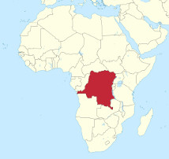
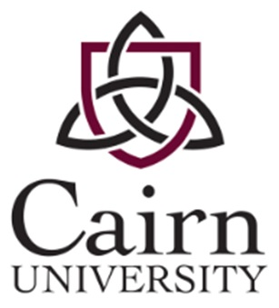
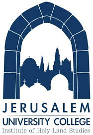

Turn on Java Script to see page. :)
Who am I? Where have I been? What have I done?
 Steve's early years (age 3-7) were spent on the Mission field of Zaire, Africa (now called the Democratic Republic of Congo, DRC). His father was a Medical Missionary doctor and Surgeon.
Upon returning to the United States, his family settled in Harrisburg, Pennsylvania.  His early intellectual development and Biblical learning was sharpened on a strict adherence to the Bible. He was raised in a strong Christian home that was dedicated to honoring God in everything. Steve has his Bachelors degree in theology from Cairn University (Philadelphia Biblical University).
He spent a year of graduate work in Israel at Jerusalem University College

(also known as the Institute of Holy Land studies). Additionally, he continues
to pursue his Masters degree in Near eastern Studies.
Currently Steve Ulrich is married and has three children. He lives in Hershey, Pennsylvania.